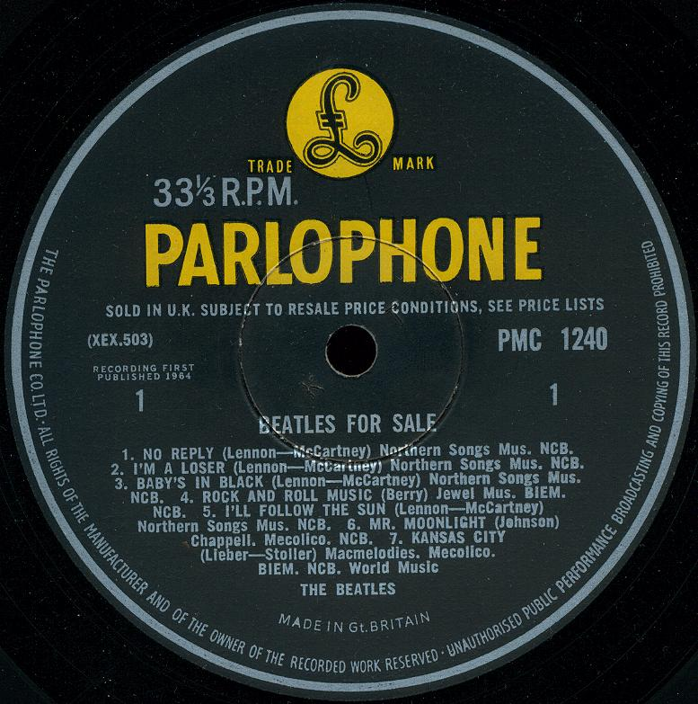

Beatles for Sale
Beatles for Sale adalah album studio keempat oleh The Beatles. Album ini dirilis pada 4 Desember 1964 di Inggris dengan label Parlophone EMI. Album ini menandai perubahan dari nada optimis karya The Beatles sebelumnya, sebagian karena kelelahan band setelah serangkaian tur yang menjadikan mereka sebagai fenomena dunia pada tahun 1964.
Beatles for Sale tidak tersedia secara luas di AS. sampai 1987, ketika katalog The Beatles distandarisasi untuk dirilis dalam bentuk CD. Sebaliknya, delapan dari empat belas lagu album muncul di rilis bersamaan Capitol Records, Beatles '65, yang dikeluarkan hanya di Amerika Utara.

Daftar lagu
sisi pertama
- No Reply
- I'm a Loser
- Baby's in Black
- Rock and Roll Music
- "I'll Follow the Sun
- Mr. Moonlight
- Kansas City / Hey-Hey-Hey-Hey!
sisi kedua
- Eight Days a Week
- Words of Love
- Honey Don't
- Every Little Thing
- "I Don't Want to Spoil the Party
- What You're Doing
- Everybody's Trying to Be My Baby
Beatles for Sale menerima ulasan yang baik di pers musik Inggris, di mana album itu memegang tempat nomor satu selama 11 dari 46 minggu yang dihabiskannya di 20 besar. Album ini juga sukses di Australia, di mana sampul band dari "Rock and Roll Music" juga menduduki puncak tangga lagu singel.
Salah satu lagu yang dihilangkan dari album versi AS, "Eight Days a Week", menjadi lagu nomor satu ketujuh The Beatles di AS ketika dikeluarkan sebagai singel di sana pada Februari 1965. Pada tahun 2000, lagu tersebut terpilih sebagai nomor 204 di edisi ketiga buku Colin Larkin All Time Top 1000 Albums.
⬅ Album sebelumnya Menu Album selanjutnya ➡